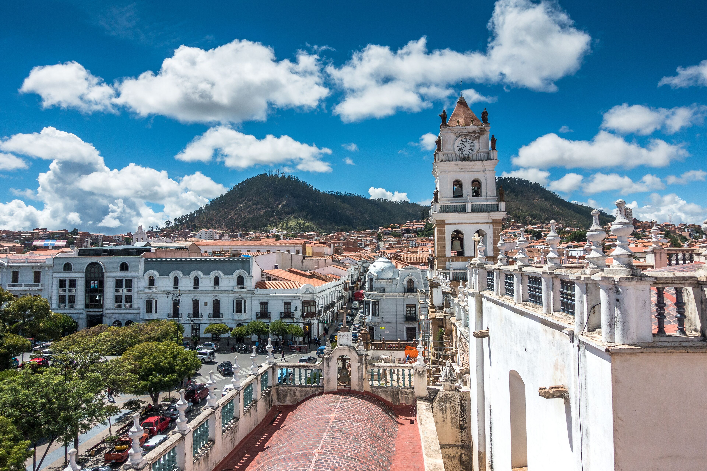

Sucre es la capital histórica y constitucional de Bolivia. Es famosa por sus hermosas edificaciones de estilo colonial pintadas completamente de color blanco, razón por la cual es conocida a nivel internacional como la "Ciudad Blanca".
Es un lugar tranquilo, lleno de cultura, museos coloniales, templos antiguos y con un clima templado muy agradable durante todo el año. Vivir aquí me conecta directamente con las raíces de la historia de mi país.
En Sucre, antiguamente llamada La Plata y Chuquisaca, estuvo durante la época virreinal la sede de la Real Audiencia de Charcas. Tras la declaración de independencia de Bolivia en 1825, la Audiencia fue sustituida por la Corte Superior de Chuquisaca.